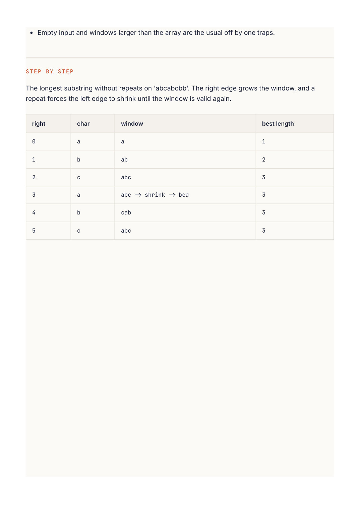

Competitive Programming
Chapter 05
Sliding window
A window is a range of the array or string that you keep looking at. Instead of recomputing everything for every possible range, you slide the window along and only update what changed at the edges. This is how "check every substring" goes from O(n²) down to O(n).
Two kinds of window
Fixed size. The window is always k wide. You slide it one step at a time: add the new element on the right, drop the old one on the left. Great for "max sum of any k consecutive elements." Variable size. The window grows and shrinks based on a condition. You expand the right edge to include more, and when a rule is broken you shrink from the left until it holds again. Great for "longest substring with no repeats" or "smallest subarray with sum at least X." window (size 3) 2 1 5 1 3 2 4 1 sum here = 9 slide right: add the new number, subtract the one that left When the window slides, only the two edge values change, so you never recount the middle.
R E A C H F O R A S L I D I N G W I N D O W W H E N Y O U S E E
"Longest" or "shortest" or "maximum" or "minimum" attached to a contiguous subarray or substring. Also anything with "at most K" or "exactly K" of something in a row. The key word is contiguous: the elements must be next to each other. If they can be scattered, this is not your pattern.
Fixed window: maximum sum of k consecutive elements
Compute the sum of the first k elements once. Then slide: each step, add the element entering the window and subtract the one leaving. One pass, O(n).
def max_sum_k(nums, k):
window = sum(nums[:k]) # first window
best = window
for i in range(k, len(nums)):
window += nums[i] - nums[i - k] # add new, drop old
best = max(best, window)
return best
int maxSumK(int[] nums, int k) {
int window = 0;
for (int i = 0; i < k; i++) window += nums[i]; // first window
int best = window;
for (int i = k; i < nums.length; i++) {
window += nums[i] - nums[i - k]; // add new, drop old
best = Math.max(best, window);
}
return best;
}
Variable window: longest substring without repeating
characters
Grow the window to the right, one character at a time. Keep a set of what is currently inside. The moment the new character is already in the set, shrink from the left, removing characters until the duplicate is gone. Track the biggest window you ever had.
def longest_unique(s):
seen = set()
left = 0
best = 0
for right in range(len(s)):
while s[right] in seen: # duplicate found, shrink left
seen.remove(s[left])
left += 1
seen.add(s[right]) # now safe to add
best = max(best, right - left + 1)
return best
int longestUnique(String s) {
Set<Character> seen = new HashSet<>();
int left = 0, best = 0;
for (int right = 0; right < s.length(); right++) {
while (seen.contains(s.charAt(right))) { // duplicate, shrink
seen.remove(s.charAt(left));
left++;
}
seen.add(s.charAt(right));
best = Math.max(best, right - left + 1);
}
return best;
}
T H E W I N D O W T E M P L A T E
Almost every variable window looks the same: a for loop moves right forward to expand, and an inner while moves left forward to shrink whenever the window becomes invalid. Update your answer either when the window is valid (for "longest") or right after fixing it (for "shortest"). Learn this shape once and dozens of problems fall out of it.
W A T C H O U T
The window size is right - left + 1 , not right - left . Off-by-one here is the most common bug. Also, for "shortest" problems you update the answer inside the shrink loop; for "longest" you update after the window is made valid again.
Deeper Intuition
Why it stays linear
The window is defined by a left and a right index, and a small running summary of what is inside.
The right index only ever moves forward, and the left index only ever moves forward, so across the whole run each element is added once and removed at most once. That is why a problem that looks like it needs a nested scan finishes in a single O(n) pass. The only real decision is when to grow versus when to shrink. grow right until valid, then shrink left to tighten 0 1 2 3 4 5 2 3 1 2 4 3 shortest window with sum >= 7 For a shortest window, grow until the condition holds, then shrink from the left as far as you can.
Another worked example: Minimum Size Subarray Sum
Find the shortest contiguous subarray whose sum is at least a target. Grow the window by moving right and adding to a running total, and whenever the total is large enough, shrink from the left to make the window as short as possible while still valid, recording the best length.
def min_subarray_len(target, nums):
left = 0
total = 0
best = float('inf')
for right, x in enumerate(nums):
total += x # grow the window
while total >= target: # shrink while still valid
best = min(best, right - left + 1)
total -= nums[left]
left += 1
return 0 if best == float('inf') else best
int minSubArrayLen(int target, int[] nums) {
int left = 0, total = 0, best = Integer.MAX_VALUE;
for (int right = 0; right < nums.length; right++) {
total += nums[right]; // grow
while (total >= target) { // shrink
best = Math.min(best, right - left + 1);
total -= nums[left++];
}
}
return best == Integer.MAX_VALUE ? 0 : best;
}
GOING DEEPER
What kinds of problems this solves
U S E T H I S P A T T E R N F O R
Any question about the best or valid contiguous run in an array or string. Longest substring with some property, shortest subarray that reaches a sum, or a fixed size window you slide across and aggregate.
Problem type Classic examples Fixed size window Maximum Average Subarray, Find All Anagrams in a String, Permutation in String Longest valid window Longest Substring Without Repeating Characters, Longest Repeating Character Replacement, Max Consecutive Ones III, Fruit Into Baskets Shortest or at least Minimum Size Subarray Sum, Minimum Window Substring, window Subarrays with K Different Integers
The algorithm, in a bit more detail
You keep a window defined by a left and a right index and a small summary of what is inside, often a running sum or a map of character counts. You always grow the window by moving right forward.
The moment the window breaks the rule (a repeat appears, the sum gets too big, too many distinct letters), you shrink from the left until it is valid again. You update your answer as you go.
The reason this is O(n) and not O(n squared) is that each index is added when right passes it and removed at most once when left passes it. Every element enters and leaves the window a single time, so the total work is linear even though the window is constantly resizing.
Variations you will run into
Fixed windows are the easiest: slide a window of size k and keep a rolling sum. Variable windows split into "find the longest valid" (grow greedily, shrink only when broken) and "find the shortest that satisfies" (grow until satisfied, then shrink to tighten). A neat trick for "exactly K distinct" is to compute "at most K" minus "at most K minus 1".
Edge cases and gotchas
Decide clearly when to shrink and whether you update the answer while the window is valid or while fixing it, since longest and shortest differ here.
For substring problems, a count map plus a counter of how many characters still need matching is cleaner than rescanning.
Do not forget to remove the character at the old left index from your summary when you shrink.

Empty input and windows larger than the array are the usual off by one traps. The longest substring without repeats on 'abcabcbb'. The right edge grows the window, and a repeat forces the left edge to shrink until the window is valid again.